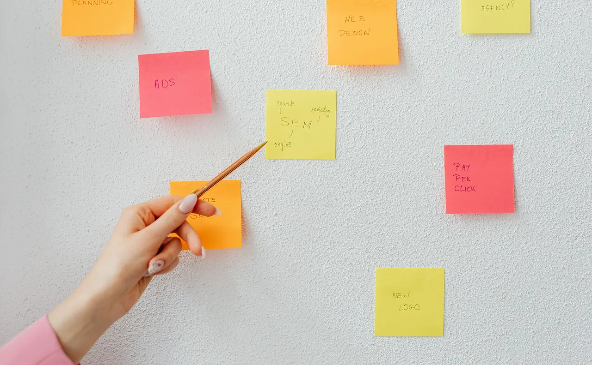

Website
Website doanh nghiệp cần những trang gì? Cấu trúc, sitemap và menu chuẩn
Trước khi bàn màu sắc hay hiệu ứng, website cần một bộ khung đúng: có những trang nào, trang nào nằm trong menu, mỗi trang nói gì. Bài này đưa ra cấu trúc chuẩn cho website doanh nghiệp, sơ đồ trang mẫu theo ngành và checklist để bạn tự lập sitemap trước khi làm việc với đơn vị thiết kế.

Website doanh nghiệp cần những trang gì? Một website doanh nghiệp tối thiểu nên có 6 trang: Trang chủ, Giới thiệu, Dịch vụ hoặc Sản phẩm, Dự án hoặc Khách hàng tiêu biểu, Liên hệ và Chính sách bảo mật. Từ bộ khung này, bạn thêm trang chi tiết cho từng dịch vụ, Bảng giá, Câu hỏi thường gặp, Tin tức hay Tuyển dụng tùy ngành và mục tiêu, rồi sắp xếp tất cả thành một sơ đồ trang (sitemap) có menu rõ ràng.
Nhiều website thiếu khách liên hệ không phải vì giao diện xấu mà vì cấu trúc lộn xộn: khách không tìm thấy dịch vụ cần, trang Giới thiệu chỉ có vài câu khẩu hiệu, trang Liên hệ thiếu bản đồ. Bài này đi từ danh sách trang bắt buộc, trang nên có theo ngành, cách vẽ sitemap, cách đặt menu đến nội dung cụ thể của từng trang. Nếu bạn đang phân vân giữa một trang đơn và cả website, hãy đọc thêm bài landing page khác website thế nào.
6 trang bắt buộc của một website doanh nghiệp
Dù bạn kinh doanh nhà hàng, phòng khám hay công ty xây dựng, khách truy cập website đều muốn trả lời ba câu hỏi: bạn là ai, bạn làm gì cho tôi, và liên hệ bạn thế nào. Sáu trang dưới đây trả lời đủ ba câu đó.
- Trang chủ: tóm tắt doanh nghiệp trong một màn hình đầu, dẫn khách tới đúng trang tiếp theo.
- Giới thiệu (Về chúng tôi): câu chuyện, đội ngũ, giấy phép, địa chỉ thật, lý do nên tin bạn.
- Dịch vụ hoặc Sản phẩm: trang tổng hợp, kèm trang con cho từng dịch vụ chính.
- Dự án hoặc Khách hàng tiêu biểu: bằng chứng bạn đã làm được việc, có hình ảnh thật.
- Liên hệ: số điện thoại, Zalo, email, địa chỉ, bản đồ, giờ làm việc và form ngắn.
- Chính sách bảo mật: nói rõ bạn thu thập thông tin gì qua form, dùng để làm gì.
Trang thứ sáu hay bị bỏ qua nhưng ngày càng quan trọng. Luật Bảo vệ dữ liệu cá nhân số 91/2025/QH15 có hiệu lực từ 01/01/2026; website có form thu thập họ tên, số điện thoại của khách nên công bố rõ mục đích sử dụng dữ liệu. Nội dung cụ thể của chính sách nên được người phụ trách pháp chế hoặc luật sư xem lại, bài này không thay cho tư vấn pháp lý.
Các trang nên có tùy ngành và mục tiêu
Sau sáu trang gốc, mỗi trang bổ sung chỉ nên tồn tại khi nó trả lời một câu hỏi khách thật sự hỏi. Bảng dưới giúp bạn chọn.
| Trang | Khi nào cần | Vị trí gợi ý |
|---|---|---|
| Trang chi tiết từng dịch vụ | Có từ 2 dịch vụ trở lên, mỗi dịch vụ có khách tìm riêng trên Google | Menu con dưới "Dịch vụ" |
| Bảng giá | Giá tương đối cố định, khách hay hỏi giá trước khi gọi | Menu chính |
| Câu hỏi thường gặp | Nhân viên trả lời đi trả lời lại cùng một nhóm câu hỏi | Chân trang hoặc cuối trang dịch vụ |
| Tin tức, Bài viết | Muốn có khách từ Google qua nội dung chuyên môn | Menu chính hoặc chân trang |
| Quy trình làm việc | Dịch vụ nhiều bước, giá trị lớn (xây dựng, nội thất, thiết kế) | Trong trang Giới thiệu hoặc trang riêng |
| Tuyển dụng | Tuyển người thường xuyên | Chân trang |
| Đặt lịch, Đặt bàn, Đặt phòng | Spa, phòng khám, nhà hàng, khách sạn | Nút nổi bật trên đầu trang |
| Chính sách đổi trả, vận chuyển, thanh toán | Website có bán hàng, nhận đơn | Chân trang |
Website có chức năng đặt hàng còn phải đáp ứng quy định về thương mại điện tử; bài đã có fanpage, Shopee có cần website có phần lưu ý pháp lý cho trường hợp này.
Sitemap là gì và cách vẽ sơ đồ trang trong 30 phút
"Sitemap" có hai nghĩa dễ nhầm. Nghĩa thứ nhất là sơ đồ trang: bản vẽ dạng cây cho thấy website có những trang nào, trang nào nằm dưới trang nào. Đây là tài liệu bạn và đơn vị thiết kế thống nhất trước khi vẽ giao diện. Nghĩa thứ hai là tệp sitemap.xml gửi cho công cụ tìm kiếm, được tạo tự động khi lập trình.
Về tệp sitemap.xml, tài liệu Google Search Central cho biết website nhỏ, khoảng 500 trang trở xuống và được liên kết nội bộ đầy đủ, có thể không cần sitemap; website mới, ít liên kết từ bên ngoài thì nên có. Nhưng điều Google nhấn mạnh hơn nằm ở hướng dẫn SEO cơ bản: Google chủ yếu tìm ra trang mới qua liên kết từ những trang đã biết, và tổ chức website hợp lý giúp cả người đọc lẫn công cụ tìm kiếm hiểu các trang liên quan với nhau thế nào. Nghĩa là sơ đồ trang tốt quan trọng hơn chính tệp XML.

Cách tự vẽ sơ đồ trang
- Viết ra 5 đến 10 câu khách hay hỏi qua điện thoại, Zalo. Mỗi câu hỏi lớn gợi ý một trang hoặc một mục.
- Viết mỗi trang lên một mẩu giấy nhớ: sáu trang bắt buộc, cộng các trang bổ sung đã chọn ở bảng trên.
- Xếp thành cây ba tầng: Trang chủ ở trên, các trang trong menu chính ở giữa, trang chi tiết ở dưới.
- Kiểm tra quy tắc "ba lần nhấp": từ trang chủ, khách đến được mọi trang quan trọng trong tối đa ba lần nhấp.
- Đặt tên đường dẫn có nghĩa, ví dụ /dich-vu/ve-sinh-cong-nghiep/ thay vì /page?id=12. Google cũng khuyên dùng từ ngữ hữu ích trong URL và gom các trang cùng chủ đề vào chung thư mục.
Điều hướng và menu: đặt gì, đặt ở đâu
Menu là bản đồ thu nhỏ của sitemap. Nhóm nghiên cứu Nielsen Norman Group có danh sách 17 nguyên tắc thiết kế menu; vài điểm áp dụng trực tiếp cho website doanh nghiệp:
- Hiện menu đầy đủ trên máy tính. Nhóm này cho rằng biểu tượng ba gạch (ẩn hết mục vào một nút) không phù hợp cho website trên màn hình lớn. Trên điện thoại thì dùng nút ba gạch là hợp lý.
- Đặt menu ở vị trí quen thuộc: ngang trên đầu trang, logo bên trái và dẫn về trang chủ.
- Cho khách biết họ đang ở đâu: làm nổi mục đang xem trong menu và dùng đường dẫn phân cấp (breadcrumb) ở trang con.
- Dùng từ quen thuộc, cụ thể. "Dịch vụ", "Bảng giá", "Liên hệ" dễ hiểu hơn những cái tên sáng tạo như "Hành trình" hay "Thế giới của chúng tôi".
- Menu con mở bằng nhấp chuột thay vì chỉ rê chuột, tránh menu nhiều tầng xếp chồng.
Một menu chính gọn thường có 5 đến 7 mục, cộng một nút nổi bật như "Nhận báo giá" hoặc "Đặt lịch" ở góc phải. Các trang phụ như Tuyển dụng, Chính sách, Câu hỏi thường gặp đưa xuống chân trang. Chân trang cũng nên lặp lại số điện thoại, địa chỉ, giờ làm việc và mã số doanh nghiệp, vì nhiều khách cuộn thẳng xuống cuối để tìm thông tin này.
Nội dung cần có trên từng trang
Trang chủ
Màn hình đầu tiên gồm một câu nói rõ bạn làm gì, cho ai, ở đâu; một hình ảnh thật về sản phẩm hoặc đội ngũ; một nút hành động chính. Phần dưới lần lượt là các dịch vụ chính (mỗi dịch vụ một khối dẫn sang trang chi tiết), lý do chọn bạn, vài dự án tiêu biểu, quy trình làm việc tóm tắt và lời mời liên hệ. Trang chủ không cần kể hết, nhiệm vụ của nó là dẫn đường.
Giới thiệu
Khách đọc trang này để kiểm tra bạn có thật và đáng tin không. Hãy có năm thành lập, địa chỉ văn phòng hoặc xưởng, ảnh đội ngũ thật, giấy phép hoặc chứng nhận liên quan, và câu chuyện ngắn vì sao bạn làm nghề này. Tránh đoạn văn chung chung kiểu "uy tín, chất lượng, tận tâm" mà không có dẫn chứng.
Trang dịch vụ
Mỗi dịch vụ chính nên có trang riêng, vì khách tìm trên Google theo từng dịch vụ. Một trang dịch vụ tốt trả lời: dịch vụ gồm những gì, phù hợp với ai, quy trình mấy bước, mất bao lâu, chi phí tham khảo hoặc yếu tố ảnh hưởng chi phí, câu hỏi thường gặp và nút liên hệ. Xem cách Dream Labs trình bày trang thiết kế website doanh nghiệp để tham khảo bố cục.
Dự án hoặc khách hàng tiêu biểu
Mỗi dự án gồm ảnh thật, bối cảnh, việc bạn đã làm và kết quả có thể kiểm chứng. Không có dự án công khai được thì thay bằng ảnh quy trình, xưởng sản xuất, chứng nhận. Tuyệt đối không dùng logo khách hàng khi chưa được đồng ý.
Liên hệ
Đặt đủ các kênh: số điện thoại bấm gọi được trên điện thoại, nút Zalo, email, địa chỉ kèm bản đồ, giờ làm việc. Form nên ngắn, chỉ hỏi những gì cần để gọi lại. Cách thiết kế form để khách chịu điền được bàn kỹ trong bài thiết kế UX/UI website doanh nghiệp.
Tin tức, Bài viết
Chỉ mở mục này nếu có người viết đều đặn. Mục tin tức với bài cuối cùng từ hai năm trước gây ấn tượng doanh nghiệp đã ngừng hoạt động. Nếu làm, hãy viết về câu hỏi khách hay hỏi, liên kết bài viết về trang dịch vụ liên quan; checklist chi tiết có ở bài thiết kế website chuẩn SEO.
Ví dụ minh họa: sơ đồ trang theo ngành
Ba sơ đồ dưới đây là ví dụ minh họa, không phải khách hàng thật, để bạn hình dung cấu trúc thay đổi thế nào theo ngành.
- Phòng khám nha khoa ở Đà Nẵng: Trang chủ, Giới thiệu (bác sĩ, trang thiết bị), Dịch vụ (niềng răng, implant, bọc sứ, mỗi mục một trang), Bảng giá, Kiến thức nha khoa, Đặt lịch, Liên hệ. Nút "Đặt lịch" luôn hiện ở góc phải menu.
- Công ty nội thất ở TP.HCM: Trang chủ, Giới thiệu, Dịch vụ (thiết kế, thi công), Dự án (lọc theo căn hộ, nhà phố, văn phòng), Quy trình, Bài viết, Liên hệ. Trang Dự án là trang được xem nhiều nhất nên đặt ngay sau Dịch vụ.
- Xưởng sản xuất bao bì xuất khẩu: Trang chủ, Giới thiệu (nhà máy, chứng nhận), Sản phẩm (theo chất liệu), Năng lực sản xuất, Khách hàng, Liên hệ, thêm phiên bản tiếng Anh. Phần đa ngôn ngữ xem bài website đa ngôn ngữ cho doanh nghiệp xuất khẩu.
Bạn có thể xem cấu trúc trang thật trong các mẫu website demo của Dream Labs, ví dụ mẫu website quán cà phê, hoặc trang giải pháp theo ngành như website nha khoa và website nội thất.
Sai lầm thường gặp khi lên cấu trúc website
- Gom mọi dịch vụ vào một trang dài. Khách khó tìm, Google cũng khó hiểu bạn mạnh dịch vụ nào. Tách trang khi dịch vụ có khách tìm riêng.
- Menu quá nhiều mục. Mười mấy mục ngang hàng khiến khách không biết bắt đầu từ đâu. Gom nhóm, đưa trang phụ xuống chân trang.
- Tạo trang trống "để sau bổ sung". Trang "Đang cập nhật" làm mất niềm tin. Chưa có nội dung thì chưa đưa lên menu.
- Đặt tên menu theo cách nói nội bộ. Tên phòng ban hay mã sản phẩm nội bộ không có nghĩa với khách.
- Trang Liên hệ thiếu thông tin cơ bản: không có địa chỉ, không có giờ làm việc, số điện thoại là hình ảnh nên không bấm gọi được.
- Đổi đường dẫn khi làm lại website mà không chuyển hướng. Các trang cũ đã có thứ hạng trên Google trở thành lỗi 404. Khi làm lại, cần lập danh sách chuyển hướng 301 từ đường dẫn cũ sang mới.
Checklist cấu trúc website làm được ngay
- Liệt kê 5 đến 10 câu khách hay hỏi trước khi mua.
- Đánh dấu đủ 6 trang bắt buộc: Trang chủ, Giới thiệu, Dịch vụ hoặc Sản phẩm, Dự án, Liên hệ, Chính sách bảo mật.
- Chọn trang bổ sung theo bảng ở trên, mỗi trang gắn với một câu hỏi của khách.
- Vẽ sơ đồ ba tầng, kiểm tra mọi trang quan trọng cách trang chủ tối đa ba lần nhấp.
- Giới hạn menu chính 5 đến 7 mục, chọn một nút hành động chính.
- Viết đường dẫn không dấu, có nghĩa cho từng trang.
- Chuẩn bị nội dung: một đoạn mô tả, ảnh thật và câu hỏi thường gặp cho mỗi trang dịch vụ.
- Nếu làm lại website cũ: xuất danh sách đường dẫn hiện có để lập bảng chuyển hướng.
Lên cấu trúc và thiết kế website tại Dream Labs
Ở Dream Labs, sơ đồ trang là bước đầu tiên của mọi dự án: chúng tôi cùng bạn liệt kê câu hỏi của khách, chốt danh sách trang và menu trước khi thiết kế, nên số trang cũng là căn cứ để chọn gói. Gói Cơ bản 8.000.000đ gồm 5 trang, phù hợp bộ khung bắt buộc ở trên. Gói Chuyên nghiệp 18.000.000đ đến 10 trang, thiết kế riêng, có hệ quản trị nội dung và viết nội dung chuẩn SEO, đủ cho website có trang chi tiết từng dịch vụ và mục bài viết. Gói Cao cấp Liên hệ không giới hạn trang, có đa ngôn ngữ, thanh toán hoặc CRM cho doanh nghiệp nhiều dòng sản phẩm.
| Gói | Giá | Thời gian | Bao gồm |
|---|---|---|---|
| Cơ bản | 8.000.000đ | 7–10 ngày4 vòng sửa | Có mặt chuyên nghiệp trên Google và điện thoại trong khoảng 10 ngày, khách tìm thấy và liên hệ được ngay.
|
| Chuyên nghiệpPhổ biến nhất | 18.000.000đ | 14–21 ngày9 vòng sửa | Website riêng đúng tầm thương hiệu, tự đăng bài để có khách từ Google lâu dài, không phụ thuộc người làm.
|
| Cao cấp | Liên hệ | 30–45 ngàyKhông giới hạn trong phạm vi | Trải nghiệm đủ khác biệt để định vị cao cấp, bán hàng và tiếp khách trực tuyến, phục vụ cả khách nước ngoài.
|
Xem thêm trang thiết kế website, thiết kế website trọn gói và bảng giá đầy đủ. Muốn có bản phác thảo sơ đồ trang cho doanh nghiệp của bạn, nhắn Zalo 0934 246 420.
Câu hỏi thường gặp
Website doanh nghiệp nhỏ cần tối thiểu bao nhiêu trang?
Khoảng 5 đến 6 trang là đủ để bắt đầu: Trang chủ, Giới thiệu, Dịch vụ hoặc Sản phẩm, Dự án, Liên hệ và Chính sách bảo mật. Có thể gộp Dự án vào trang Giới thiệu nếu chưa có nhiều dự án.
Sitemap và menu khác nhau thế nào?
Sitemap là sơ đồ toàn bộ các trang của website, kể cả trang chi tiết và trang chính sách. Menu chỉ hiển thị những trang quan trọng nhất ở đầu trang để khách điều hướng nhanh.
Website có cần tệp sitemap.xml không?
Theo Google, website nhỏ được liên kết nội bộ đầy đủ có thể không cần, nhưng website mới ít liên kết bên ngoài nên có. Tệp này thường được tạo tự động, nên website doanh nghiệp nào cũng nên có và gửi qua Google Search Console.
Menu chính nên có bao nhiêu mục?
Thường 5 đến 7 mục là dễ đọc, cộng một nút hành động nổi bật như "Nhận báo giá". Các trang phụ như Tuyển dụng, Chính sách nên đưa xuống chân trang.
Có nên làm trang Bảng giá không?
Nên làm nếu giá của bạn tương đối ổn định, vì khách thường muốn biết khoảng chi phí trước khi liên hệ. Nếu giá thay đổi theo từng dự án, hãy ghi giá tham khảo hoặc các yếu tố ảnh hưởng đến chi phí.
Trang Chính sách bảo mật có bắt buộc không?
Website có form thu thập thông tin cá nhân nên có trang này để công bố mục đích sử dụng dữ liệu, nhất là khi Luật Bảo vệ dữ liệu cá nhân 2025 đã có hiệu lực từ 01/01/2026. Nội dung cụ thể nên nhờ người am hiểu pháp luật xem lại.
Làm lại website cũ có cần giữ nguyên cấu trúc trang không?
Không cần giữ nguyên, nhưng phải chuyển hướng 301 từ đường dẫn cũ sang trang mới tương ứng để không mất thứ hạng tìm kiếm và không để khách gặp trang lỗi.
Nguồn ảnh: ảnh 2: Christina Morillo / Pexels · ảnh bìa: picjumbo.com / Pexels · ảnh 1: Kaboompics.com / Pexels. Ảnh dùng theo giấy phép miễn phí của Pexels, chỉ mang tính minh họa.
Bắt đầu cùng Dream Labs
Muốn có sơ đồ trang cho website của bạn?
Nhắn Zalo cho Dream Labs ngành nghề và dịch vụ chính của doanh nghiệp. Chúng tôi phác thảo giúp danh sách trang, menu và nội dung cần chuẩn bị trước khi bắt đầu thiết kế.